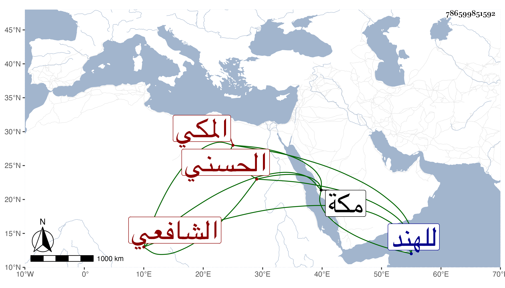

0902Sakhawi.DawLamic.ITO20230111-ara1.EIS1600.786599851592
Biography ID: 786599851592
615
مرشد بن محمد بن محمد الزين بن ناصر الدين بن التقي الحسني المكي الشافعي ويعرف بابن المصري . ناسخ من أقرباء بيت ابن السيد عفيف الدين مجيد صنعة التجليد والتذهيب ونحوهما اشتغل قليلا ولازمني في سنة ست وثمانين بمكة حتى قرأ علي القول البديع واستجلاب ارتقاء الغرف من نسختيه وتكررت كتابته لأولهما وسمع مني وعلي أشياء ، وهو ساكن فهم يتكسب بالنساخة ونحوها أكثر أوقاته مقل بحيث تكرر سفره للهند للاسترزاق وسافر في سنة أربع وتسعين وأنا هناك بعد كتابته عدة من تصانيفي ودامت غيبته .
